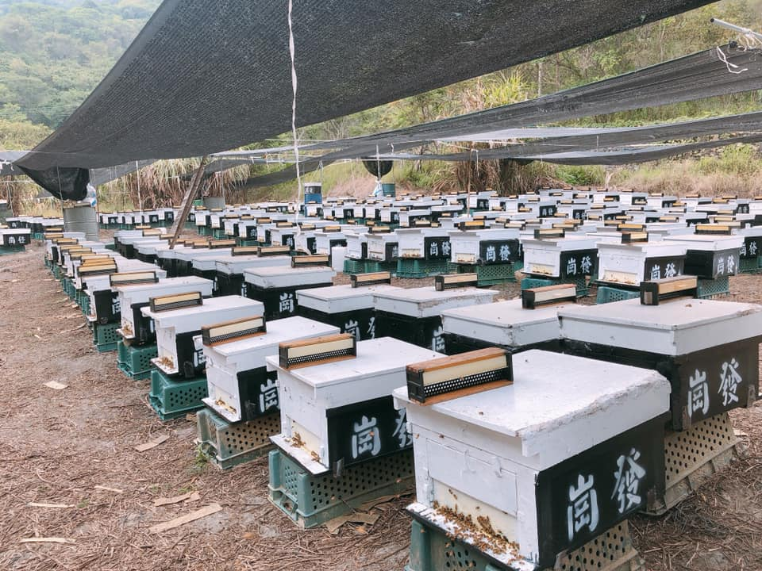
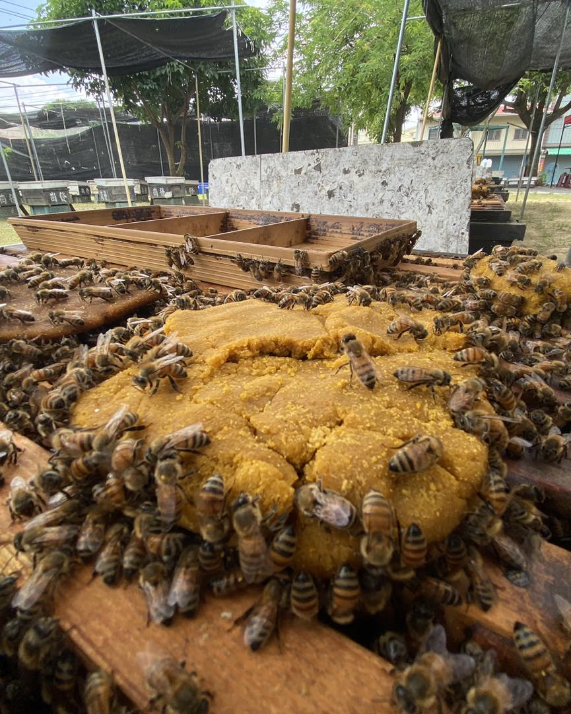

嗡嗡嗡，嗡嗡嗡，我是一隻小蜜蜂...
臺灣位於亞熱帶地區，擁有豐富的植物資源，為養蜂業提供了良好的生長環境。早在17世紀末至18世紀初，臺灣就已出現以東方蜜蜂為主的小規模飼養活動。 由於該品種不易馴化且產蜜量有限，1910年日本殖民政府自海外引進西洋蜜蜂的商業品種後，養蜂技術與產業結構遂逐步實現規模化與專業化，開啟了臺灣現代養蜂業的發展階段（宋一鑫，2006）。
全球養蜂市場的價值於2024年達到105億美元，並預計在2034年前以年均4.2%的增長率發展，最終將達到158億美元。這一增長主要受益於人們對傳粉媒介，特別是蜜蜂在農業中關鍵角色的認識提升。 隨著環保意識的不斷提高，以及各國政府對養蜂業者提供的補助、培訓和資源支持，市場逐漸向永續養蜂實踐邁進，並且變得更加經濟實惠。此外，技術的發展正在徹底改變養蜂行業，通過改進蜂巢監控系統、預防疾病的方法以及選擇性育種技術，提高了生產效率並促進了蜂蜜產量的增長。隨著消費者對食品品質的重視，對天然和有機產品的需求日益增加， 這也進一步推動了蜜蜂衍生產品的市場需求(日商環球訊息有限公司，2025)。

養蜂業係指專門從事蜂蜜與蜂蠟生產之產業活動」(行政院主計總處，2015)。蜂農在產業鏈中扮演授粉服務的提供者，同時亦仰賴植物的花蜜與花粉作為生產資源；相對地，果農則以蜜源植物作為蜂農的供應者，並依賴蜜蜂授粉以提升農作物產量。此種互為供需的關係，使原本被視為外部效益的授粉服務，經由市場機制內部化為具經濟價值的投入要素，形成蜂農與果農間的互惠與共生關係，並賦予授粉活動實質的產業報酬意涵(孫聖恆，2019)。
在現代養蜂產業中，蜂箱與巢礎是維持蜜蜂生存與生產的關鍵設備。蜂箱的設計除了提供蜜蜂棲息空間外，也兼具食物儲存功能，因此材料選用需能承受長期風吹日曬與雨淋，常見包括木材、保麗龍或塑木等。巢框與人造巢礎的配置，則引導蜜蜂有效築巢與分工。透過這些設施，蜂農能從蜂群中獲取多種經濟資源，包括蜂蜜、蜂王漿、蜂膠、蜂蠟及花粉。此外，雄蜂蛹、蜂毒以及專門培育用於授粉的蜂群，也為產業創造額外收益，形成養蜂業多元化的經濟模式。
